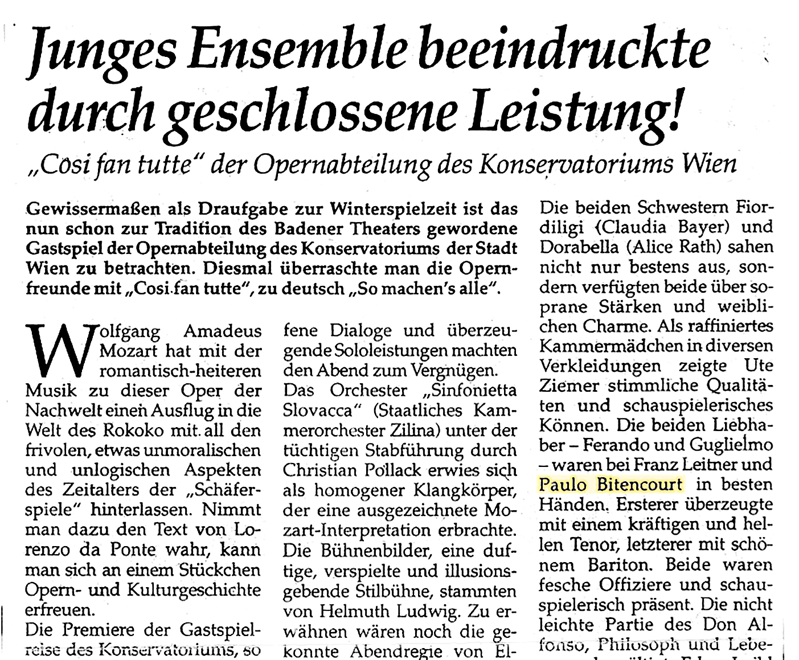
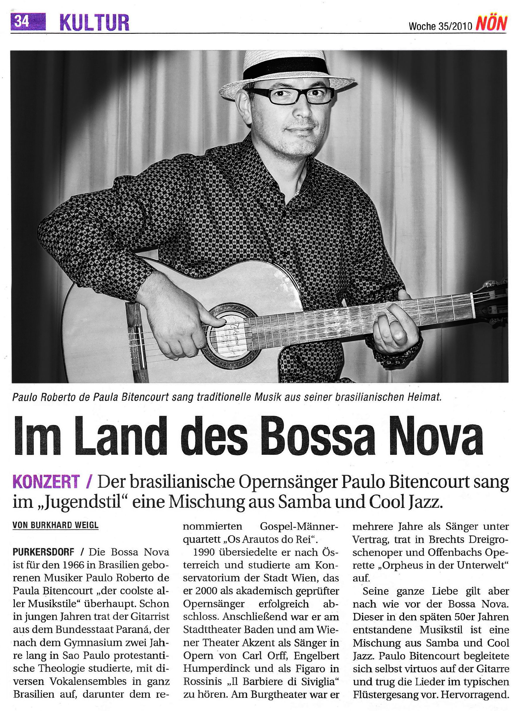

Reportagens Sobre Paulo Bittencourt
Jornais da Áustria
“Ópera Così Fan Tutte (Assim Fazem Todas), de Wolfgang Amadeus Mozart, no Stadttheater Baden: A interpretação de Paulo Bittencourt do amante Guglielmo esteve nas melhores mãos, que impressionou com seu lindo barítono e ótima presença de palco.”
“Bossa nova é para o músico brasileiro Paulo Bittencourt, nascido em 1966, ‘o mais cool de todos os estilos musicais’. Ainda jovem, o músico do Estado do Paraná excursionou com vários conjuntos vocais por todo o Brasil. Em 1990, mudou-se para a Áustria e estudou no Conservatório da Cidade de Viena, onde, em 2000, graduou-se com sucesso como cantor de ópera academicamente certificado. No Stadttheater Baden e no Theater Akzent de Viena, cantou numa ópera de Carl Orff e interpretou Figaro em Il Barbiere di Siviglia, de Rossini. No Burgtheater de Viena, trabalhou vários anos como cantor contratado, atuando em A Ópera dos Três Vinténs, de Brecht, e na opereta Orfeu no Inferno, de Offenbach. Mesmo assim, todo seu amor ele ainda dedica à bossa nova. Esse estilo musical, surgido no final da década de 1950, é uma mistura de samba e cool jazz. Paulo Bitencourt se acompanhou virtuosamente no violão e executou as canções em típico estilo sussurrado.”